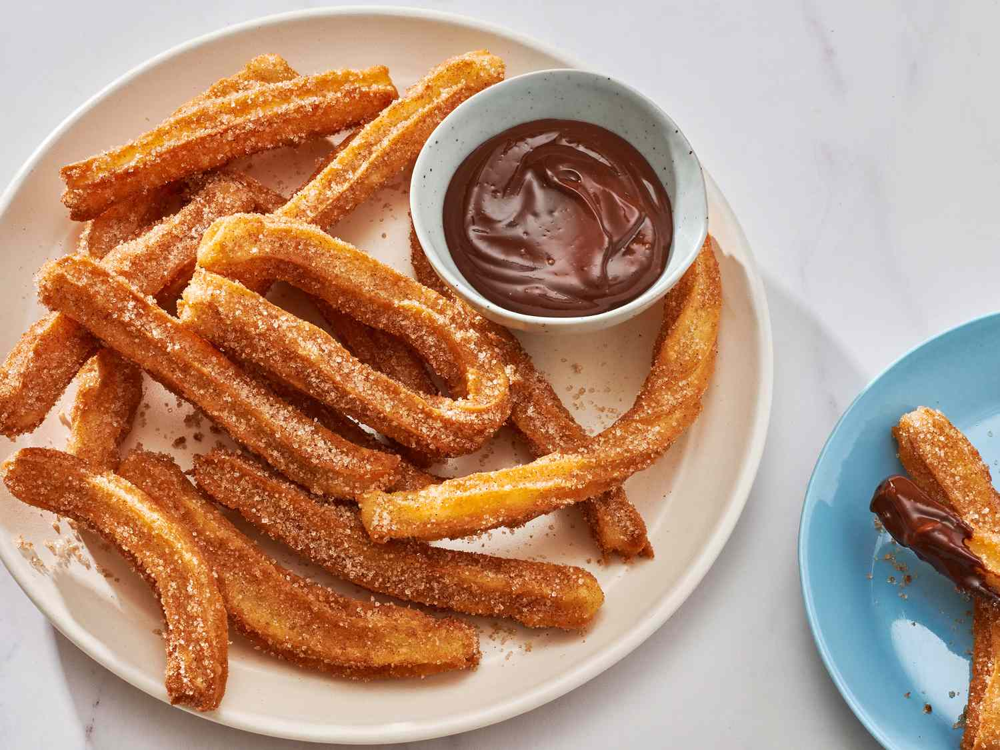

Churros

Description
Crispy on the outside, soft on the inside—these Spanish-style donuts are rolled in cinnamon sugar and perfect for dipping in chocolate.
Ingredients
- 1 cup water
- 2½ tbsp sugar
- ½ tsp salt
- 2 tbsp vegetable oil
- 1 cup all-purpose flour
- Oil for frying
- ½ cup sugar + 1 tsp cinnamon (for coating)
Steps
- Boil water, sugar, salt, and oil. Remove from heat and stir in flour.
- Let dough cool slightly. Transfer to a piping bag with a star tip.
- Heat oil in a deep pan to 375°F (190°C).
- Pipe dough into oil, fry until golden brown.
- Drain and roll churros in cinnamon sugar.